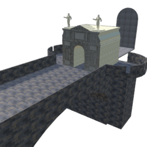
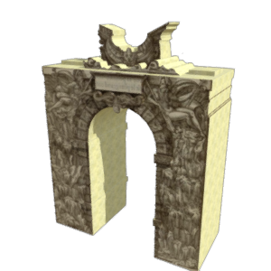
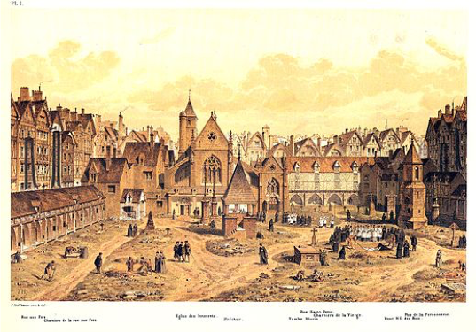
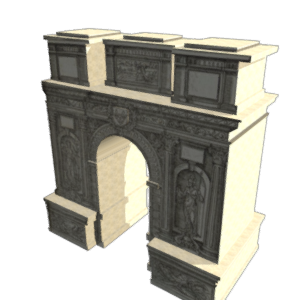

The first stop on king Charles IX’s royal entry was at the city gate of Paris. The Porte Saint-Denis played an important role in the city’s defense, as well as in ceremonial processions. Traditionally, the king’s entry always began at the Porte-Saint Denis. City officials and noblemen greeted Charles IX at the Porte Saint-Denis and then joined the king in his procession through the city. Here, the temporary arch was built as an attachment to the permanent gate.
For many of the stops on the king’s procession route, temporary structures were constructed for the event. However, city officials also made use of existing architecture. The Fontaine du Ponceau was a permanent fountain at the cross streets of rue des Egouts and rue Saint-Denis.
The stops along the processional route were based off of tradition. Catherine de Medici, the queen mother, had also entered into Paris with the king Henri II. When it was time for her to assist Charles IX plan the royal entry, she had her own personal experience to use as a reference point. Elisabeth of Austria, the new queen of France, proceeded into Paris three weeks later.
At this stop, city officials commissioned a pedestal to be built outside of the church of Saint-Sepulchre. While source material gave us a clear picture of the procession route, some questions remain unanswered. As many of the sites no longer exist, we chose this location using the source material, a 16th century map, and input from period experts.
The Cemetery of St. Innocent, attached to the Church, was the closest the procession came to passing a formal green space. The cemetery had little symbolic importance or aesthetic value. Its mass graves held up to 1,500 poor Parisians at a time and brought significant revenue to the church. At the time of Charles IX’s procession, the grave site was obscured from the crowds of the procession by a three-meter-high wall that surrounded it on all sides. Read more about green space in early modern Paris here.
Rather than include a pedestal or arch, this stop on the processional route included a platte peinture - a visual deception to appear as if one could walk into the painting. Artists stretched canvas over a large wooden frame to create this visual effect. Little plays were often acted out at different stops.
Arches were created at both sides of the bridge and connected with fabric, creating a roof along the Notre Dame Bridge. At this time, bridges were lined with shops and commercial enterprises. However, we are unsure how these shops would interact with the procession. Would they stay open? Would they be crowded with merchants and customers attempting to get a look at the king?
The procession moved through the Île de la Cité. The final turn allowed the procession to approach the cathedral head on, granting a stunning view of the front façade as they moved from the street into the courtyard. The procession ended with a Catholic religious ceremony.